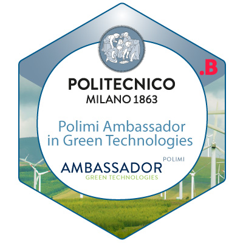
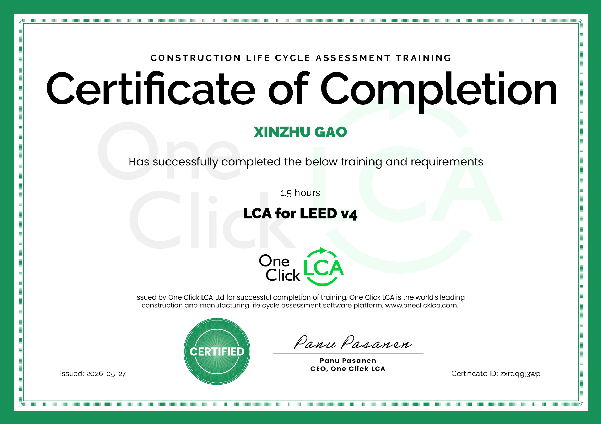

MSc Building and Architectural Engineering
Politecnico di Milano · In progress, expected October 2026
04 / ABOUT & CV
I am Xinzhu Gao, an architectural designer based in Lecco, Italy, pursuing an MSc in Building and Architectural Engineering at Politecnico di Milano. My work connects architectural design, heritage renewal and environmental performance.
Experience in Italy and China has shaped my approach to design development, construction coordination and visual communication. My current research explores reversible timber construction and sustainable alpine hospitality.
Download CV ↓Politecnico di Milano · In progress, expected October 2026
Politecnico di Milano
North China University of Technology

A Politecnico di Milano digital badge recognising an interdisciplinary study path focused on sustainability, environmental responsibility and green technologies in the built environment.

One Click LCA · Certificate of Completion · Issued 27 May 2026
Credential ID: zxrdqgj3wp